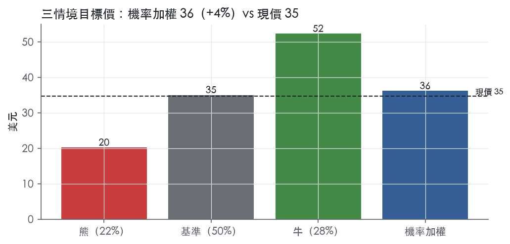
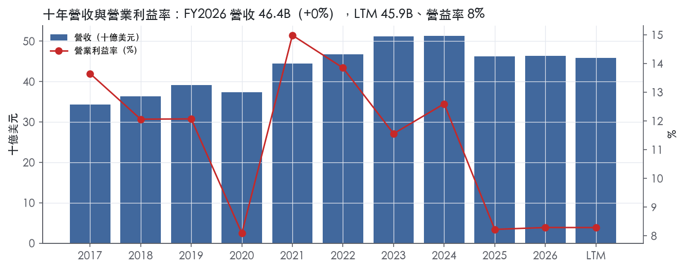
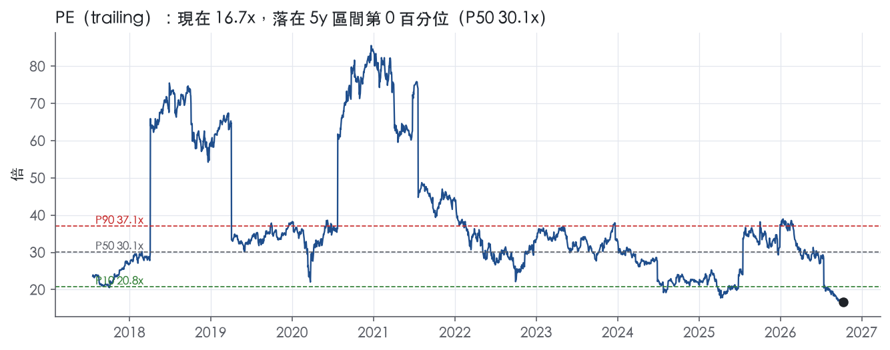
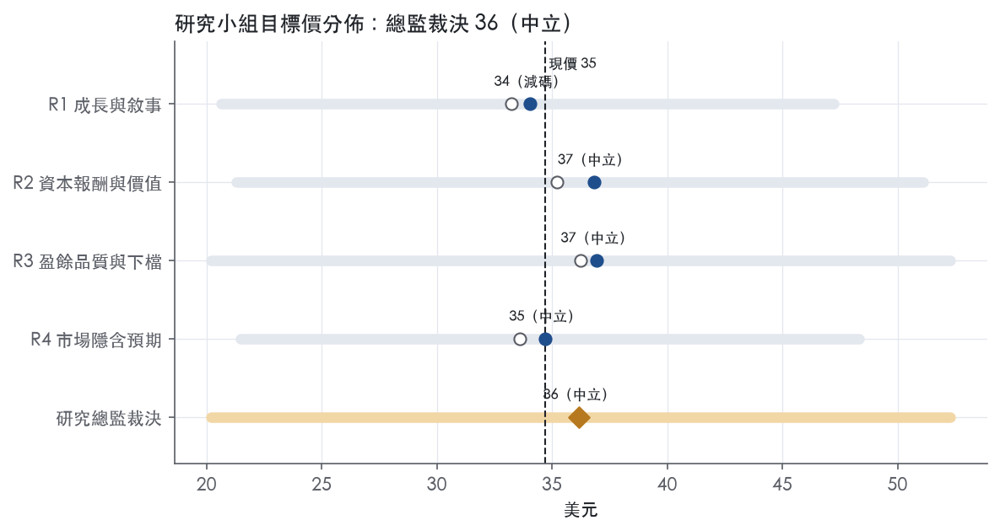
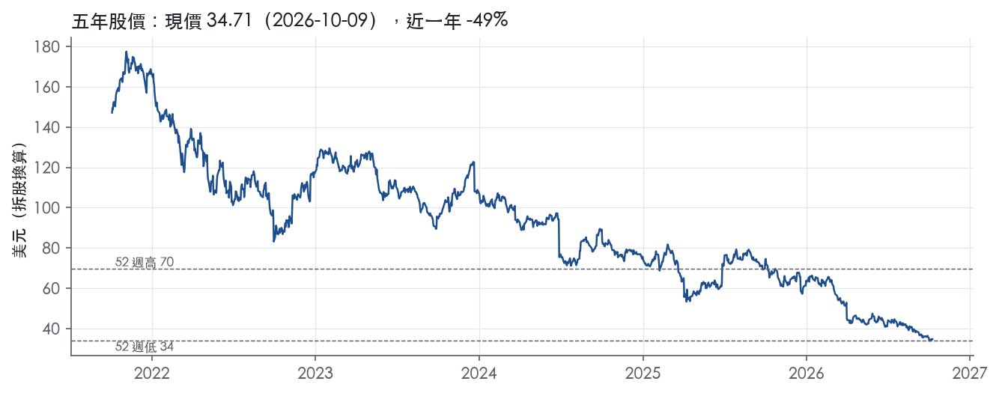

評等總表 › 非必需消費 › NKE
谷底盈餘回升已被現價定價，等 FY2028 指引確認再談重估，中性｜評等 中立｜目標價 36
| 報告日 | 評等 | 目標價 | 當時股價 | 超額報酬 |
|---|---|---|---|---|
| 2026-10-09 | 中立 | 36.18 | 34.71 | +1.0% |
| 評等 | 中立 |
| 12 個月目標價 | 36 美元 |
| 現價 | 34.71 美元（2026-10-09） |
| 預期報酬 | 股價 +4.2%＋股息 4.7%＝總報酬 +9.0%；同業籃門檻 8.0%，超額 +1.0% |
| 估值方法 | P/E 23.0x，套在第 5–8 季的EPS（也就是一年後的未來四季） |
| 三情境 | 熊 20／基準 35／牛 52 |
| 研究流程 | 四位研究員兩輪辯論＋研究總監裁決 |
| 資料來源 | SEC EDGAR XBRL、Tiingo、FRED（全免費） |
谷底盈餘回升已被現價定價，等 FY2028 指引確認再談重估，中性（研究總監裁決，四位研究員兩輪辯論後）
評等 中立｜12 個月目標價 36 美元（總監三情境機率加權 37 與研究員中位數 36 各半）｜現價 34.71（2026-10-09）
預期報酬：股價 +4.2%＋股息 4.7%＝總報酬 +9.0%。同業籃門檻 8.0%，超額 +1.0%。
估值方法：P/E 23.0x，套在第 5–8 季的EPS（也就是一年後的未來四季）。三情境：熊 20（22%）／基準 35（50%）／牛 52（28%）。
什麼會讓研究總監改變看法：FY2027Q4 財報（約 2027-06 下旬）若給出 FY2028 營收指引轉正且 GAAP 營益率指引高於 7%，基準倍數上修至 25–27.7x、立場轉為看多；反之 FY2027Q2（約 2026-12 下旬）大中華 cn 年減擴大超過 −26%、或全年指引下修至雙位數衰退，Q5–Q8 營益率退回 6.5%、熊機率上調、立場轉為看空。
| 過去四季（實際，FY2027Q1） | 未來四季 | 第 5–8 季 | 第 9–12 季 | |
|---|---|---|---|---|
| 營收（B） | 45.9B | 42.2B | 42.6B | 44.3B |
| 營收成長 | -1.2% | -8.0% | 1.0% | 4.0% |
| 營業利益率 | 8.3% | 5.2% | 7.0% | 8.0% |
| EPS（美元） | 2.08 | 1.12 | 1.52 | 1.81 |
| EPS 成長 | 6.7% | -46.1% | 35.7% | 18.6% |
| 每股股息（美元） | 1.64 | 1.64 | 1.64 | 1.64 |
| P/E（現價） | 16.7x | 30.9x | 22.8x | 19.2x |
| 股息殖利率（現價） | 4.7% | 4.7% | 4.7% | 4.7% |
過去四季為申報數字；預測為研究總監的假設、程式計算。倍數與殖利率都用現價計算，用來看現價對應各期獲利的高低。
| 情境 | 機率（歷史） | 故事 | 未來四季營收成長 | 第 5–8 季營益率 | 倍數 | 目標價 | 股價漲跌 |
|---|---|---|---|---|---|---|---|
| 熊 | 22%（19%） | 對應風險表第 1 條（大中華加速下滑）與第 3 條（批發客戶／消費轉弱），第 2 條 Pace 執行不如預期為營益率機制：批發反轉、7.8B 存貨折扣清庫存、固定費用去槓桿，盈餘被視為新常態、倍數向失寵品牌靠攏 | -11.0% | 5.0% | 20.0x | 20 | -41.8% |
| 基準 | 50%（55%） | FY2027 照指引走完高個位數衰退與 5% 上下的 GAAP 營益率，FY2028 營收持平微增、營益率回升至 7%，股利由 8.4B 現金加短投墊付；市場對回升後的 EPS 維持今天的約 23x，報酬來自盈餘回升與 4.7% 股息，不含倍數擴張 | -8.0% | 7.0% | 23.0x | 35 | 0.9% |
| 牛 | 28%（26%） | Pace 節省前置、北美成長擴散、大中華跌幅收斂至個位數，FY2028 指引轉正並確認營益率止跌，市場為此付確認溢價，回到前瞻帶 P10 附近 | -5.0% | 8.0% | 28.0x | 52 | 50.7% |
目標價由程式依研究總監的驅動與倍數計算；機率由研究總監給定。括號內是歷史頻率：把這檔股票過去十年 12 個月報酬的波動形狀，置中在基準情境，結果落在各情境附近的比例。

四位研究員用不同方法各自估值，回應研究總監的質疑後交出第二輪，最後由總監逐點裁決。各研究員的主張見第七章，裁決理由見第八章，完整論證見《研究底稿》。
| 立場（一輪→二輪） | 加權目標價（一輪→二輪） | 評等（一輪→二輪） | 第二輪倍數 | 熊～牛目標價 | |
|---|---|---|---|---|---|
| R1 成長與敘事 | 中性→看空 | 33→34 | 減碼→減碼 | 29.0x | 21～47 |
| R2 資本報酬與價值 | 中性→中性 | 35→37 | 中立→中立 | 23.0x | 21～51 |
| R3 盈餘品質與下檔 | 中性→中性 | 36→37 | 中立→中立 | 25.0x | 20～52 |
| R4 市場隱含預期 | 看空→看空 | 34→35 | 減碼→中立 | 22.0x | 21～48 |
| 研究總監裁決 | 中性 | 36 | 中立 | 23.0x | 20～52 |
目標價由程式依各自的驅動與倍數計算；評等＝機率加權總報酬 − 同業籃門檻。
NIKE, Inc. 是全球最大的運動鞋服設計、行銷與經銷商，產品涵蓋鞋類、服飾、裝備與配件¹。公司業務以 NIKE 品牌為核心，另持有全資子品牌 Converse，從事運動生活風格鞋服與配件的設計、行銷與經銷¹。客戶端涵蓋一般消費者（經由直營通路）與批發零售商夥伴，產品線跨多種運動與健身活動¹。FY2026 全年營收 46.40B，過去十年營收規模在 34–51B 區間波動，FY2023、FY2024 曾達到高點後連續兩年下滑。
NIKE Brand 依地理區分為四大營運區塊：North America、EMEA、Greater China、Asia Pacific & Latin America，另外 Converse 單獨揭露，Global Brand Divisions 為極小的尾項²。FY2026 全年 NIKE Brand 營收 45.2B，年增 1%（reported），批發營收 27.5B 年增 6%，NIKE Direct 營收 17.7B 年減 6%，Converse 營收 1.2B 年減 31%²。換算下來批發占 NIKE Brand 營收約六成、直營約四成，Converse 占集團營收比重已降到個位數百分比。FY2027Q1（截至 2026-08-31）NIKE Brand 營收 11.0B，批發 6.8B 年減 1%，NIKE Direct 4.1B 年減 8%（其中 Digital 年減 13%、直營門店年減 5%），Converse 僅 263M、年減 28%¹。產品線三大類為鞋類、服飾、裝備，北美區 FY2026Q4 鞋類年增 4%、服飾持平、裝備年減 1%（reported）²。10-K Item 1 本身未提供各分部毛利率或獲利能力的拆分。
地理上分散全球，但近期成長動能明顯分化：北美是唯一穩定成長的區域，Greater China 與 EMEA 則是主要拖累。FY2027Q1 North America 總營收 5,127M、年增 2%；EMEA 總營收 3,176M、年減 5%；Greater China 總營收 1,180M、年減 22%（currency-neutral 年減 26%）；Asia Pacific & Latin America 總營收 1,463M、年減 2%¹。Greater China 的鞋類與服飾營收分別年減 22% 與 23%（currency-neutral 更深至 26–27%），是集團中跌幅最大的品類與地區組合¹。10-K 風險因子揭露，公司幾乎所有運動鞋服皆於美國境外製造，且多數產品銷往美國境外，因此暴露於全球貿易、關稅與地緣政治風險³。通路上公司明確將業務分為批發（wholesale）與 NIKE Direct（含 NIKE Brand Digital 與直營門店）兩大通路，兩者在 FY2026 走勢分化：批發成長、直營衰退。
FY2026Q2（截至 2025-11-30）營收 12.43B、年增 0.6%，毛利率 40.6%、營益率 8.2%（is.revenue、is.gross_margin），尚處於營收止跌、利潤率承壓階段。FY2026Q3（截至 2026-02-28）營收 11.28B、年增 0.1%，毛利率降至 40.2%、營益率降至 5.0%，為近八季利潤率低點之一。FY2026Q4（截至 2026-05-31）營收 10.97B、年減 1%（reported）、年減 4%（currency-neutral），但毛利率因 IEEPA 關稅預期回收認列而暴增 890 個基點至 49.2%，其中約 900 個基點來自 IEEPA 關稅預期回收 986M 美元²，當季淨利 1.1B、年增 407%，EPS 0.72 美元（內含每股 0.52 美元的 IEEPA 關稅回收利益）²。FY2027Q1（截至 2026-08-31）營收 11.21B、年減 4%（reported）、年減 5%（currency-neutral），毛利率回到正常化水準 42.8%、年增 60 個基點，SG&A 年減 3% 至 3.9B，淨利 712M、年減 2%，EPS 0.48 美元¹。公司對 FY2027 全年指引：營收預期年減高個位數百分比，有效稅率預期落在中 20% 區間，調整後稀釋 EPS 預期在 1.15–1.35 美元之間（不含約每股 0.15 美元的 Pace 重組費用）¹。
CEO Elliott Hill 表示「Sport Offense 在我們的表現業務上正帶動可衡量的進展，我們推出 Pace 來幫助我們加速並擴大這個動能」¹。公司同時承認「NIKE Sportswear、Jordan Brand 與大中華區還有更多工作要做，我們正採取審慎行動以長期且正確的方式強化這些業務」¹。CFO Dave Denton 表示公司「專注於強化產品組合健康度、提升企業生產力，並以紀律分配資源來支持長期股東價值」¹。Pace 被定義為「一項營運模式轉型，用以加速並擴大 Sport Offense 的成功」，內容包括現代化全球供應鏈、在印度建立新園區以強化企業能力、重組為三大地理區，以及進一步精簡組織以降低成本¹。公司預期 Pace 到 FY2031 累計可帶來約 2.5B 美元的節省，相應產生約 1.0B 美元的稅前費用（主要為員工相關成本），另加上 FY2026 已認列的約 0.3B 美元遣散費，FY2027 預期再認列約 0.3B 美元¹。10-K 風險因子則強調公司依賴高品質員工、全球配銷設施運作，以及應對貿易政策與關稅變動的能力，作為維持競爭力的前提條件³。整體看，NIKE 目前的敘事是「用重組換時間」：批發通路與北美區撐住營收底部，但 Greater China、Jordan Brand、Sportswear 與直營數位通路同步走弱，FY2026Q4 的毛利率跳升主要是一次性關稅回收而非結構性改善，FY2027 指引營收續衰退顯示復甦仍需時間驗證。Pace 計畫的節省規模（2.5B 美元至 FY2031）與營收下滑幅度（指引高個位數衰退）相比，短期內對沖效果有限，真正的拐點要看 Sport Offense 能否在 Jordan Brand 與中國市場複製北美的止跌成效。

NIKE 的護城河只靠一個來源，就是品牌這項無形資產；它足以支撐未來 5 年以上 ROIC 高於資本成本，但我們沒有把握延續 10 年，所以評級為「窄」。過去九年 ROIC 每年都高於資本成本，單看歷史數字符合寬護城河的樣貌。下修的理由在方向：ROIC 從 FY2021 的 65.1%一路滑到 FY2026 的 21.2%，已是十年最低。營收、營益率、直營通路與大中華區同時走弱，目前看不到止跌證據。
無形資產（品牌與智慧財產）是唯一有證據支撐的來源。
轉換成本、網路效應、成本優勢、效率規模四類，在原文中都找不到支撐證據，因此不列入。供應端方面，公司幾乎所有運動鞋服都在美國境外製造⁴。公司也承認，部分專業代工廠一旦退出，可能無法及時或根本無法找到替代產能⁴。換句話說，製造端沒有專屬的成本優勢，反而有依賴性。消費者改買別的品牌不需付出任何成本，整條護城河等於押在品牌熱度能否持續。
數字看得到護城河，但同時也看得到它在變窄，這兩件事互相衝突。
支持面：ROIC 有資料的 9 年中有 9 年高於資本成本代理值 10.2%，十年平均 37.1%，平均超額報酬 26.8%。最低一年的 ROIC 21.2% 仍明顯高於 10.2%。毛利率標準差 0.9%，顯示品牌定價力至今沒有破。
衝突面：ROIC 標準差 13.5%、ROE 標準差 11.5%，報酬波動遠大於毛利率波動，代表品牌優勢沒有穩定傳導到資本報酬。營業利益率最新 8.3%，低於十年平均 11.5%，也貼近十年最低的 8.1%。FCF 利潤率最新 4.7%，同樣低於十年平均 9.2%。FY2026Q4 毛利率 49.2%依業務概況章屬於一次性關稅回收，FY2027Q1 已回到 42.8%，並非結構性改善。
為什麼維持窄、不給寬：毛利率穩、營益率卻下滑，意思是品牌仍能定價，但要花更多費用才換得同樣的銷量，這通常是護城河變淺的前兆。為什麼不降到無：最差年度的 ROIC 21.2% 對比資本成本 10.2% 仍有明顯緩衝，品牌定價力也還沒有出現崩壞的訊號。
最大的威脅是品牌熱度流失，不是成本或技術。
目標倍數相對同業應持平，不給溢價。目前 trailing P/E 16.7x，位於 5 年分位 0.3%，5 年中位數為 30.1x；過去的溢價建立在 ROIC 長期遠高於資本成本，但 ROIC 已降到十年最低且仍在下滑，溢價應等營業利益率止跌後再恢復。窄評級意味著估值模型的超額報酬期以 5 年左右為上限，之後應假設 ROIC 向資本成本收斂。
| 指標 | 最新 | 十年平均 | 標準差 | 最低 | 最高 |
|---|---|---|---|---|---|
| ROIC | 21.2% | 37.1% | 13.5% | 21.2% | 65.1% |
| 毛利率 | 42.9% | 44.1% | 0.9% | 42.7% | 46.0% |
| 營業利益率 | 8.3% | 11.5% | 2.4% | 8.1% | 15.0% |
| FCF 利潤率 | 4.7% | 9.2% | 3.1% | 3.7% | 13.4% |
| ROE | 22.1% | 34.2% | 11.5% | 17.4% | 55.0% |
程式計算。資本成本代理值（10 年債＋5%）：10.2%；ROIC 平均減資本成本：26.8%；ROIC 有資料的 9 年中，高於資本成本 9 年。
NIKE 的盈餘品質計分表沒有紅色現金燈，但 LTM 現金轉換已從十年平均滑落到黃燈區間，加上程式標出的應收帳款紅旗需要進一步拆解才能判斷是真問題還是口徑問題。整體而言盈餘「大致可信」但不是「現金完全同步」的高品質卷面，估值端應對 GAAP EPS 做小幅折價，而非全盤採信調整後數字。
LTM 營業現金流／淨利為 0.90x，低於十年平均 1.25x 與近三年平均 1.12x，落在黃燈區。LTM 自由現金流／淨利更弱，僅 0.68x，同樣是黃燈，顯示扣掉資本支出後的現金創造力道比淨利成長慢。拉長看，FY2024 CFO 7.43B、FCF 6.62B 都明顯高於淨利 5.70B，現金轉換良好；但到 FY2026 CFO 已降到 2.87B、FCF 僅 2.18B，對比淨利 3.11B，CFO／淨利已低於 1x（資料包年度表）。季度數據更凸顯波動：FY2027Q1 當季 CFO 僅 0.14B、FCF 為負 0.06B，遠低於淨利 0.71B（資料包近八季表）。應計比率 LTM 為 +0.8%，雖仍在黃燈而非紅燈範圍，但方向已從十年平均的 -3.2%、近三年平均的 -1.7% 翻正，代表盈餘開始比過去更依賴應計項目而非現金。
FY2027 展望把「Adjusted Diluted EPS」訂在 1.15 至 1.35 美元區間，明確排除約 0.15 美元的 Pace 重組費用¹。Pace 計畫預計到 FY2031 產生約 2.5B 美元累計節省，但需要約 1.0B 美元的稅前費用（主要是員工相關成本），加上 FY2026 已認列約 0.3B 美元的遣散費用，FY2027 預計再認列約 0.3B 美元¹。公司定義 Adjusted Diluted EPS 為剔除重組與遣散費用後的 GAAP 稀釋 EPS，並聲明這是非 GAAP 指標、不可取代 GAAP 數字¹。本季（FY2027Q1）實際認列的重組費用規模新聞稿表格中未單獨列出金額，僅能從全年展望的 0.15 美元/股反推全年影響（新聞稿未提供單季拆分）。這類員工相關重組費用雖然會計上是「非經常性」，但 Pace 計畫橫跨到 FY2031、且前身是 2026 年 3 月已宣布的成本重整計畫，顯示 NIKE 近幾年重組費用有「連續發生」的性質，不應完全視為一次性加回。此外，FY2027Q1 認列了外國稅務稽核和解，使有效稅率從 21.1% 升至 22.7%，這是真實的現金稅負擾動而非營運表現變化¹。
槓桿面非常乾淨：LTM 淨負債／EBITDA 僅 0.22x，近三年平均 0.02x，十年平均甚至是淨現金的 -0.04x，遠優於 1.50x 的綠燈門檻。截至 FY2027Q1，現金及約當現金加短期投資為 8.4B 美元（6,903M + 1,465M），長期債務降至 5,893M 美元、較去年同期的 7,996M 美元下降 26%（含轉列至流動負債的 2,000M 美元）¹。股東權益從 13,468M 美元升至 15,220M 美元，資產負債表結構健康、無槓桿對估值倍數構成限制的理由。資本配置上，公司本季透過股利返還股東約 610M 美元，年增 3%¹。（股利＋回購）／淨利 LTM 為 79.1%，低於近三年平均 119.6% 與十年平均 134.7%，顯示公司在淨利下滑期已主動收斂股東回饋力度而非舉債硬撐配息，這是正面訊號。稀釋股數年變動 LTM 為 +0.2%（轉為微幅稀釋），對比近三年與十年平均都是淨減少（-1.9%、-1.5%），代表回購步調已明顯放緩，與現金流轉弱、保留現金因應 Pace 重組支出的邏輯一致。
應收帳款成長比營收快 26 個百分點（FY2026），紅燈：這是口徑放大造成的假警報，不是營運資金惡化。FY2026 全年營收成長僅 0.2%（資料包年度表），分母極小，任何應收帳款的小額變動都會在百分點差距上被放大。對照最新一期資產負債表，FY2027Q1 應收帳款淨額為 5,242M 美元，較去年同期 4,962M 美元成長約 6%，而同期營收下滑 4%，應收帳款與營收的背離方向持續存在但幅度遠低於程式標出的 26pp（新聞稿資產負債表）。公司在 MD&A 風險因子中提到零售商財務狀況惡化可能導致應收帳款增加、收款費用上升，這是可能的解釋路徑之一，但 10-K 節錄未提供 FY2026 應收帳款展延天數或壞帳準備的具體揭露來證實或排除此風險，需要在後續季度追蹤應收帳款週轉天數是否持續惡化⁴。結論：此紅旗屬於低基期分母造成的假警報為主，但仍建議列為觀察項，非可完全忽略。
現金轉換（CFO／淨利、FCF／淨利）黃燈：真實訊號但非結構性惡化，主因是 Pace 重組的現金支出與營運資金波動。FY2027Q1 單季 CFO 僅 0.14B，公司在資產負債表評論中說明現金減少主因是「現金股利與資本支出超過營運產生的現金」，屬於已知、可解釋的季節性與配息時點效應，而非盈餘造假（新聞稿資產負債表評論）¹。
應計比率轉正（LTM +0.8%）：方向轉差但絕對水準仍遠低於 5.0% 紅燈門檻，屬於需要留意但尚不構成問題的訊號。
股數稀釋轉正（+0.2%）：是回購暫緩、保留現金應對 Pace 重組支出的主動資本配置決策，不是股權稀釋失控。
利息保障倍數缺值：淨利息費用在 FY2027Q1 為淨收入（-14M，即利息收入大於支出），公司淨現金狀況下此指標不適用，不構成風險訊號¹。
估值應以 GAAP 稀釋 EPS 為基礎並對 Pace 重組費用做保守加回，但加回幅度要打折，因為這類「員工相關重組」計畫已連續三年出現、具有半經常性質，不是一次性。現金轉換黃燈與應計比率轉正建議對 LTM 盈餘打一個溫和折扣（非深度折價），反映應收帳款與現金落差的早期訊號，但淨現金槭桿與回購放緩顯示公司財務彈性仍足，不構成倍數壓縮的理由。目前 trailing 倍數已處於五年與十年區間的低分位（P/E 16.7x 對比 5y P50 30.1x），顯示市場本身已對盈餘品質與成長放緩打了相當大的折扣，估值研究員可視現金轉換能否在後續兩季回升至 1x 以上，決定是否進一步下修倍數假設（資料包倍數帶）。
| 項目 | LTM | 近三年 | 十年 | 燈號 | 規則 |
|---|---|---|---|---|---|
| 營業現金流／淨利 | 0.90x | 1.12x | 1.25x | 黃 | ≥1.00x 綠、<0.80x 紅 |
| 自由現金流／淨利 | 0.68x | 0.96x | 1.00x | 黃 | ≥0.90x 綠、<0.60x 紅 |
| 應計比率（(淨利−CFO)／平均總資產） | 0.8% | -1.7% | -3.2% | 黃 | ≤0.0% 綠、>5.0% 紅 |
| SBC／營收 | 1.5% | 1.5% | 1.2% | 綠 | ≤3.0% 綠、>8.0% 紅 |
| 淨負債／EBITDA | 0.22x | 0.02x | -0.04x | 綠 | ≤1.50x 綠、>3.00x 紅 |
| 利息保障倍數（營業利益／利息） | — | — | — | — | ≥8.00x 綠、<3.00x 紅 |
| 稀釋股數年變動 | 0.2% | -1.9% | -1.5% | 黃 | ≤0.0% 綠、>3.0% 紅 |
| （股利＋回購）／淨利 | 79.1% | 119.6% | 134.7% | 綠 | ≥50.0% 綠、<0.0% 紅 |
| 應收帳款成長 − 營收成長（FY2026） | +25.5pp | — | — | 紅 | ≤5pp 綠、>15pp 紅 |
程式計算；燈號以 LTM（無則近三年平均）判定。
| 風險 | 觸發指標（看什麼數字、在哪裡看） | 對 EPS 的影響方向與粗略幅度 | 未來 12 個月發生機率 | 出處 |
|---|---|---|---|---|
| Greater China 加速下滑 | 每季 8-K 的 Greater China 區域營收與 currency-neutral 年增率 | 負向／中大：FY2027Q1 已年減 22%（currency-neutral -26%）¹ | 高 | 8-K 財報新聞稿（2026-10-01） |
| Pace 重組執行不如預期（省不到 2.5B、費用超支） | 每季 8-K 揭露的 Pace 相關遣散費認列金額 vs. 0.3B 美元 FY2027 預估；SG&A 年增率 | 負向／中：若 FY2027 僅能認列部分省下的成本，調整後 EPS 1.15–1.35 區間下緣風險 | 高 | 8-K 財報新聞稿（2026-10-01） |
| 消費性支出轉弱、批發客戶財務惡化 | 批發營收年增率（10-K 揭露應收帳款、壞帳準備科目）；NIKE Direct 年增率 | 負向／中：NIKE Direct FY2027Q1 年減 8%、Digital 年減 13%¹ | 中 | 10-K 年報 FY2026 Item 1A（風險因素） |
| 關稅／貿易政策變動影響毛利率 | 每季毛利率 bps 變動與公司揭露的關稅相關一次性項目（如 FY2026Q4 的 IEEPA 關稅回收 986M） | 雙向／中大：FY2026Q4 毛利率曾因一次性關稅回收跳升 890bps，屬非常態，若關稅政策反轉可能逆轉² | 中 | 10-K 年報 FY2026 Item 1A（風險因素） |
| 契約代工集中度風險（供應鏈中斷） | 代工廠所在國貿易政策變動公告、10-K/10-Q 是否揭露供應商變更 | 負向／大但機率低：公司稱可於一段時間內替代供應商，短期衝擊屬暫時性⁴ | 低 | 10-K 年報 FY2026 Item 1A（風險因素） |
Greater China 是目前唯一仍在惡化、且規模夠大足以拖累整體盈餘的區域。FY2027Q1 Greater China 總營收僅 1,180M 美元，年減 22%（currency-neutral 年減 26%），鞋類、服飾雙雙年減 22–23%，是公司八大分部中跌幅最深的組合¹。管理層自己承認「Greater China 還有更多工作要做，正採取審慎行動強化這些業務」，但沒有給出止跌時點¹。這個風險可被每季 8-K 的區域營收表直接監測，不需要猜測，是五條裡觀測性最強、也是當下惡化速度最快的一條。
Pace 重組的節省金額與執行時程存在不確定性，且公司自己在新聞稿的前瞻聲明裡列為風險¹。公司預期 Pace 到 FY2031 累計省下約 2.5B 美元，需付出約 1.0B 美元稅前費用（主要是員工相關成本），FY2026 已認列約 0.3B 美元遣散費，FY2027 預期再認列約 0.3B 美元¹。公司明文警示「實際節省、費用與現金支出可能與估計有重大差異」¹。調整後 EPS 指引 1.15–1.35 美元已經排除約 0.15 美元的 Pace 重組費用，如果費用認列超出預期或節省效果遞延，GAAP EPS 與調整後 EPS 的差距會擴大，市場信心也會受挫。
消費性支出轉弱與批發客戶財務健康度，是 10-K 明文列為前兩大經濟風險之一⁴。10-K 指出，過去已有零售客戶財務困難甚至破產，影響公司銷售、應收帳款與財務狀況，未來經濟走弱時可能再度發生⁴。目前 NIKE Direct 自身的數位通路已顯著走弱：FY2027Q1 NIKE Brand Digital 年減 13%，直營門店年減 5%。批發通路相對穩健（僅年減 1%），但 10-K 特別提到零售商集中度上升會「集中公司的信用風險」，一旦大型批發夥伴之一出現流動性問題，衝擊會比過去更集中。
關稅與貿易政策是雙向風險，過去一年已實際且重大地影響毛利率⁴。FY2026Q4 毛利率因 IEEPA 關稅預期回收認列 986M 美元而暴增 890 個基點至 49.2%，貢獻當季每股 0.52 美元的一次性利益²。FY2027Q1 毛利率已回落至正常化的 42.8%¹。10-K 明確寫道「保護主義措施已導致產品成本上升，若實施額外措施，可能對 NIKE 的銷售及／或盈利造成重大不利影響」⁴。這條風險的方向不確定（未來可能再有一次性回收利益，也可能是額外關稅成本），但幅度已被證明可以到每股 0.5 美元量級，不能忽略。
契約代工集中度風險機率低但一旦發生衝擊大⁴。10-K 坦承公司「依賴一群集中的代工廠生產公司銷售的所有鞋類產品」，若主要供應商改變合作條件或無法履約，可能對業務運營、銷售、財務狀況造成重大不利影響⁴。公司自評認為可在一段時間內發展替代供應來源，短期中斷多屬暫時性質，但也承認替代來源「可能不如現有供應商具成本效益，並可能對盈利能力造成持續性不利影響」⁴。因為公司過去未發生重大供應鏈斷鏈事件，且有多年布局分散供應鏈的紀錄，將機率列為低。
CFO 交接期的執行風險。10-K 揭露現任 CFO Matthew Friend 已於 2026 年 8 月 17 日卸任、9 月 4 日正式離職，轉由顧問角色過渡³，而這段期間恰好涵蓋 Pace 重組的啟動與 FY2027Q1 財報發布，財務團隊交接期與大型重組計畫同步進行，執行風險值得留意，公司本身未在風險因子章節單獨揭露此點。
倍數重新評價的風險與基本面風險同樣重要。目前 trailing P/E 16.7x 處於過去 5 年分位數的 0.3%、EV/EBITDA 11.5x 處於 0.5% 分位（資料包倍數帶），市場已經用歷史低點倍數在定價衰退情境，意味著即使基本面風險如期發生，股價下行空間可能有限；但反過來看，若上述任一風險（尤其 Greater China 或 Pace 執行）惡化超出目前低倍數隱含的悲觀程度，倍數仍有再下修空間，這是純粹估值層面的風險，10-K 不會寫，但報告使用者應該同時監測倍數分位與基本面指標。
現價 34.71 對應 trailing（過去四季）P/E 16.7x、EV/EBITDA 11.5x、EV/EBITA 13.8x、EV/Sales 1.1x、FCF 殖利率 4.1%。主要估值倍數 P/E 現在 16.7x，落在5 年區間第 0 百分位（P10／P50／P90 = 20.8x／30.1x／37.1x）。

把程式的機械基準預測放到現價下，市場付的前瞻倍數是：P/E（未來四季） 16.2x、P/E（第 5–8 季） 15.7x。反推 DCF 顯示市價隱含未來五年營收年成長 2.1%（WACC 9.0%、終值成長 3.0%、FCF 利潤率 7.0%，SBC 不加回）。
| 倍數 | 現在 | 5 年 P10 | 5 年 P50 | 5 年 P90 | 現在分位 | 全期 P50 |
|---|---|---|---|---|---|---|
| P/E | 16.7x | 20.8x | 30.1x | 37.1x | 0.3% | 33.3x |
| EV/EBITDA | 11.5x | 15.7x | 22.9x | 29.0x | 0.5% | 24.3x |
| EV/EBITA | 13.8x | 18.1x | 26.2x | 32.3x | 0.6% | 28.0x |
| EV/EBIT | 13.8x | 18.1x | 26.2x | 32.3x | 0.6% | 28.0x |
| EV/Sales | 1.1x | 1.5x | 2.8x | 4.3x | 0.6% | 3.4x |
| P/S | 1.1x | 1.5x | 2.8x | 4.4x | 0.4% | 3.3x |
| P/FCF | 24.5x | 17.5x | 33.8x | 59.9x | 28.3% | 36.6x |
trailing 倍數（股價 ÷ 過去四季）；分位以每個交易日計算。
同業籃：DECK, CROX（SIC 3021 同業 4 家中，CY2025 營收最接近的 2 家）。評等門檻 —：同業「倍數不變下持有一年」的隱含報酬中位數（＝ FCF 殖利率 ×(1＋g)＋g，g 為 5 年營收年複合成長並夾在 −2%～8%），每家夾在 0～15%、P/E 低於 5 倍視為資料可疑而排除，中位數再限制在 10 年債到 10 年債＋5% 之間。
| 代號 | 市值 | 5 年營收 CAGR | 營益率 | ROIC | P/E | 5 年 P/E 中位數 | EV/EBITDA | P/FCF | 隱含報酬 |
|---|---|---|---|---|---|---|---|---|---|
| NKE | 51.5B | 0.8% | 8.3% | 21.2% | 16.7x | 30.1x | 11.5x | 24.5x | 4.9% |
| DECK | 11.3B | 16.5% | 22.7% | — | 11.8x | 22.1x | — | 10.1x | 18.7% |
| CROX | 5.5B | 23.9% | 20.7% | 3.6% | 10.0x | 9.8x | 7.2x | 7.8x | 21.8% |
| 同業中位數 | 20.2% | 21.7% | 3.6% | 10.9x | 16.0x | 7.2x | 9.0x | — |
全部 trailing，程式以各公司 SEC XBRL 與 Tiingo 行情計算；第一列為本檔。
事後實現前瞻倍數帶（P/E，2018-10-22..2025-10-20）：P10／P50／P90 = 27.7x／35.7x／50.7x。它是每個交易日的股價除以之後四季實際實現的指標；一年後，今天的第 5–8 季正是那時的未來四季，所以這條帶是 12 個月目標價的同口徑倍數。因為用的是事後實際而非當時預期，過去成長超乎預期的公司這條帶會偏低。
程式的機械基準（成長率從過去四季年增率三年收斂到 6%、利潤率持平）用 事後實現前瞻 P/E P50 估值得到 79（127.4%），市場現行前瞻倍數（現價 ÷ 基準 未來四季指標）一年後持平，套在基準 第 5–8 季指標得到 36。這兩個數字只是參考點，不是本報告的目標價；研究員對這個定價的回應在第七章。
下表是每位研究員第一輪（各自獨立）與第二輪（回應研究總監的質疑後）的結果。目標價全由程式依各自的假設計算。
| 立場（一輪→二輪） | 加權目標價（一輪→二輪） | 評等（一輪→二輪） | 第二輪倍數 | 熊～牛目標價 | |
|---|---|---|---|---|---|
| R1 成長與敘事 | 中性→看空 | 33→34 | 減碼→減碼 | 29.0x | 21～47 |
| R2 資本報酬與價值 | 中性→中性 | 35→37 | 中立→中立 | 23.0x | 21～51 |
| R3 盈餘品質與下檔 | 中性→中性 | 36→37 | 中立→中立 | 25.0x | 20～52 |
| R4 市場隱含預期 | 看空→看空 | 34→35 | 減碼→中立 | 22.0x | 21～48 |
| 研究總監裁決 | 中性 | 36 | 中立 | 23.0x | 20～52 |
目標價由程式依各自的驅動與倍數計算；評等＝機率加權總報酬 − 同業籃門檻。
分歧度：第一輪 加權目標價 33～36（區間＝現價的 9%）· 倍數 22～29x · 立場 中性×3、看空×1；第二輪 加權目標價 34～37（區間＝現價的 8%）· 倍數 22～29x · 立場 看空×2、中性×2。

| 研究員 | 第二輪主張 | 堅持的理由 |
|---|---|---|
| R1 成長與敘事 | 偏空。29 倍套未來四季 EPS，對五年中位數 30.1 倍小幅折價。 | 谷底盈餘不能套同業 10.9 倍，同業營益率 21.7% 在高檔。 |
| R2 資本報酬與價值 | 中性。23 倍套 FY2028 EPS，主張倍數一年內不變。 | ROIC 21.2% 為十年最低，營益率止跌前不給更高倍數。 |
| R3 盈餘品質與下檔 | 中性。25 倍套 FY2028 EPS，相對現價實質持平。 | 剔除 986M 一次性關稅回收；Pace 費用延續到 FY2031，不加回。 |
| R4 市場隱含預期 | 偏空。22 倍套 FY2028 EPS，看空來自盈餘基數偏高。 | 市場用含關稅回收的 8.3% 營益率，他用 7.0% 與稅率 25%。 |
每位研究員的逐條回應與完整論證見《研究底稿》（NKE_研究底稿_2026-10-12.docx）。
| 分歧點 | R1 | R2 | R3 | R4 | 什麼資料會分出勝負 |
|---|---|---|---|---|---|
| 基準倍數與口徑 | 29x@ntm，錨 trailing 5y P50 30.1x 小幅折價；點估 32.54（程式，四人最低） | 23x@q5_q8，一年後前瞻倍數不變：ROIC 續降、12 個月內無重估事件 | 25x@q5_q8，相對現價實質持平（點估 35.72，僅高 2.9%），類股去評價、無回評觸發 | 22x@q5_q8，前瞻帶尾段衰退偏誤＋成長降檔 | FY2027Q4 財報（約 2027-06 下旬）的 FY2028 指引：營益率是否確認止跌 |
| Q5–Q8 營益率 | 7.0% | 7.0% | 6.5%：Pace 半經常、不加回，sell-through 仍弱 | 7.0%：Pace 淨節省到 Q9–Q12 約 +1pp，費用延續至 FY2031 | FY2027Q2–Q4 營運管銷年增率（Q1 為 −6%）與不含一次性的毛利率 |
| Q5–Q8 營收成長 | 3%：FY2028 下半年轉正 | 1%：FY2025 −9.8% 之後 FY2026 僅 +0.2% | 1% | 1%：大中華、Converse、Digital 皆多年整頓 | FY2027Q3–Q4 大中華與 Digital 年增率；FY2028 營收指引 |
| NTM 營收成長 | −8%（指引中點） | −7% | −7% | −7% | FY2027Q2 財報（約 2026-12 下旬）營收年減幅 |
| 牛情境倍數 | 34x@ntm | 27.7x：回前瞻帶 P10 | 28x：前瞻帶 P10 附近 | 25x：僅比基準高 3x | 同第一列；FY2028 指引轉正後市場是否回到前瞻帶 P10 |
1. 基準倍數與口徑：選 R3，25x 套 Q5–Q8 EPS。 口徑先定：劇本主尺是 eps@q5_q8，R1 把 trailing 帶套在 NTM，而 NTM 正是含 Pace 費用的谷底 GAAP EPS。谷底年市場付的 trailing 倍數不是 P50：10 年 P90 70.0x遠高於 5 年 P90 37.1x，極端高倍數全落在 5 年窗之外，時間上對應 FY2020 EPS 谷底 1.60到 FY2021 回升 3.56之間。R1 自己主張這個機制，卻對 5 年 P50 30.1x 再折價，自相矛盾，點估 32.54 因此是四人最低；R1 要的谷底年分位資料包沒有，但這個 P90 落差就是現成證據。再定水準。R2 的 23x 前提是「12 個月內沒有觸發重估的事件」，這在基準路徑上不成立：FY2027Q4 財報（約 2027-06 下旬）會給 FY2028 指引，屆時 FY2027 的營益率谷底已報完，這正是護城河章「溢價應等營業利益率止跌後再恢復」的條件。R2 第二輪已撤回前瞻帶的衰退期偏誤理由（自估 FY2020、FY2025–26 的上推與 FY2021 的下拉互抵），R4 仍引用它，我採 R2 的分析；R4 的 22x 於是只剩「成長降檔」，而這已反映在 25x 低於前瞻帶 P10 27.7x 約一成。不往上給的理由全是個股因素：護城河窄且變窄、ROIC 21.2% 為十年最低、5 年營收 CAGR 0.8%（同業表）、Pace 費用延續到 FY2031¹，所以 25x 也低於 5 年 trailing P50 30.1x，不給溢價。程式檢查表把 25x 標為「相對市場持平倍數 +54%」，那是拿 16.2x 配機械基準 Q5–Q8 EPS 2.21 來比，而機械 EPS 用的是含 986M 關稅回收的 8.3% 營益率與 17.1% 稅率，與 FY2027 調整後 EPS 指引 1.15–1.35¹不相容；依 R2 自述「23x 幾乎就是今天市場對我的 Q5–Q8 EPS 付的倍數」與 R3 自述「25x 點估只比現價高 2.9%」，現價付的是約 23–24x，25x 是小幅擴張，不是重估。
2. Q5–Q8 營益率：選 R4，7.0%。 R3 的 6.5% 等於假設 Pace 節省到 FY2028 幾乎不入帳。但 FY2027Q1 營運管銷已年減 6%（lower wage-related expense）、毛利率年增 60bps 來自倉儲物流成本下降¹，成本動作已落地；R4 是唯一寫出費用與節省時程的人（FY2027 認列約 0.3B、其餘約 0.7B 落在之後；需求創造 +5% 代表部分節省被再投資）。R3「Pace 不加回」我接受，7.0% 是含費用的 GAAP 口徑。R3 的缺口：沒有解釋 Q1 已出現的 −6% 管銷為何在 FY2028 消失。
3. Q5–Q8 營收成長：選 R2，1%。 R1 的 3% 靠「FY2028 下半年轉正」，但十年表裡公司自身造成的衰退（FY2025 −9.8%）之後一年只有 +0.2%（年度表成長欄 FY2026）；這次管理層同時在整頓 Sportswear、Jordan、大中華三個品牌溢價最集中的業務¹，FY2027Q1 大中華 −22%、Digital −13%、Converse −28% 都是多年項目。R1 只有北美 +2% 一條正面證據，沒有 Jordan 或中國止跌的跡象。
4. NTM 營收成長：選 R1，−8%。 指引是高個位數衰退，而 FY2027Q1 已報 −4%¹，後三季必須比 Q1 深才能達成全年指引，NTM 又含 FY2028Q1。R2、R3、R4 的 −7% 是區間較淺端，沒有說明為何後三季會比指引隱含的輕。
5. 牛情境倍數：選 R3，28x。 R4 牛情境的故事是「Sport Offense 擴散到 Jordan 與中國、FY2028 指引轉正」，倍數卻只比基準高 3x，與故事不對稱；中國止跌正是護城河章列的恢復條件，成真時回到前瞻帶 P10 27.7x 附近是合理對應。R1 的 34x 是 ntm 口徑，不採。
漂移：無退回。 R4 靠攏比例 69%，但全部來自 E1（8.4B 現金加短投推翻 12 個月內砍股利機制，機率向歷史靠）與 E4 的一致性修正，E3 反而下修 op_margin_y3；R1 42% 來自 G1、G3，皆附證據；R2、R3 遠離中位數。四人第二輪都已刪除利率折價理由（G5、E6），無人用利率壓倍數。
與機械基準不同的驅動：
目標倍數 25x，eps，第 5–8 季。錨：事後實現前瞻 P/E 帶 P10 27.7x 之下約一成、10 年 trailing P10 22.0x之上；相對同業不套中位數 10.9x（被 CROX 拉低、同業營益率中位數 21.7% 在高檔、口徑為 trailing），也不給溢價。
機率依據：置中分布 P75 +24%、P25 −19%，右偏，牛應高於熊，本部過去 22 份全部熊高於牛的慣性在此不延續。R3 相同情境結構的歷史對照為 28／54／18，我把熊上調 4pp、基準下調 4pp，理由是公司特有的：風險表第 1、2 條都標「高」且第一次驗證點就在 FY2027Q2（約 2026-12 下旬），而指引隱含 Q2–Q4 衰退比 Q1 的 −4% 更深，這一季會是最難看的一季。牛不再上調，因為大中華從 cn −26% 收斂到個位數在 12 個月內還沒有任何跡象，管理層也沒給時點。
差在倍數，不在盈餘：我們的 Q5–Q8 EPS 與現價隱含的相當（R2、R3 自述現價付約 23–24x），差距是一年後市場為「谷底已過、營益率止跌」付 25x，加上 4.7% 股息率（快照）；最脆弱的驅動是 op_margin_y2 7.0%，若 Pace 節省被需求創造費用全數吃掉，就退回 R3 的 6.5% 與中立。立場看多，應與程式以 8% 絕對門檻算出的評等一致；若改用同業籃門檻（上限為 10 年債加五個百分點），超額會縮小但方向不變。現價不是在定價 FY2028 的反彈，而是在定價反彈不會來。
程式檢查發現，總監最初裁決的機率加權目標價 38 落在四位研究員第二輪區間 34～37 之外，可能是逐點選邊的拼湊效應。總監複核後決定修正（最終 37）：基準情境把 R3 的 25x（以 6.5% 營益率、相對現價持平為前提）套在 R2／R4 的 7.0% 營益率上，FY2028 營益率止跌同時進了 EPS 與倍數，重複計入；加權結果超出區間全部來自這個配對。改採 R2 的 23x（現價對含回升 EPS 所付倍數），倍數擴張歸入牛情境，立場改為中性；情境、機率與其他驅動不變。
逐驅動看，我的選擇並沒有「每點都挑最樂觀」：NTM 營收 −8% 是四人最悲觀的一個，Q5–Q8 營收 1% 與稅率 24% 是多數意見，NTM 營益率 5.2% 居中。整張表裡唯一偏上的選擇是倍數 25x——它是 q5_q8 口徑中最高的一個（R2 23x、R4 22x）。問題正出在這一個點與另一個點的配對。
基準情境 38.06 高於四位研究員的基準（33、35、36、33），來源很清楚：我把 R3 的 25x 套在 R2／R4 的 7.0% 營益率 上。但這兩個數字在原作者手上是互相制衡的：
我的 EPS 與 R2 接近（7.0%、營收 −8%），所以現價對我的 EPS 付的約為 23x；25x 就是約 9% 的倍數擴張，和裁決原文「25x 是小幅擴張，不是重估」的說法不符。更關鍵的是機制重複計入：我用來否決 R2「12 個月內無重估事件」的理由，是 FY2028 指引將確認營益率止跌；而 FY2028 營益率止跌正是我採 7.0% 而非 6.5% 的理由。同一個事件，先進了 EPS，又進了倍數。相信營益率止跌的人沒有給重估，給了 25x 的人沒有相信 7.0%——我把兩邊的好處都拿了。
情境與機率則沒有傾斜：牛、熊同取自 R3，成對且相對基準大致對稱（+37%／−47%）；機率 28／50／22 相對歷史基準率 32／52／16 是熊偏重，不是牛偏重。機率加權 38.12 幾乎等於基準 38.06，證實超出區間的全部來源是基準情境的配對問題，不是情境機率。
保留 7.0% 營益率——FY2027Q1 營運管銷年減 6%、毛利率因物流成本年增 60bps 是已落地的證據，比 R3「節省不入帳」更有依據。改動的是倍數：基準倍數改採 R2 的 23x，即市場今天對含營益率回升的 Q5–Q8 EPS 所付的倍數；基準情境的定義變成「谷底 EPS 回升兌現，但市場不付確認溢價」。倍數擴張（28x、回前瞻帶 P10 附近）歸入牛情境，那裡的故事本來就是「FY2028 指引轉正、中國止跌」，重估放在那裡才與事件對應。第一項分歧裁決改為 value，牛情境倍數裁決不變。
預期效果：基準情境落回 R2、R3 的 35–36 區間，加權結果應在四人區間內；相對 8% 門檻，超額大幅縮小，立場改為中性，與 R2、R3 一致。change_my_mind 同步調整：FY2028 指引若給出營收轉正且 GAAP 營益率高於 7%，基準倍數才上修至 25–27.7x；反之大中華年減擴大、指引下修至雙位數衰退，熊機率上調。可證偽主張、證據清單與其他驅動不變。
現價 34.71 → 點估目標價 35 → 機率加權目標價 37 → 目標價 36，差距拆成五段：成長順延 +1 美元（市場現行倍數 16.2x 一年後持平、獲利照機械基準）；倍數差 +15 美元（總監倍數 23.0x vs 市場持平倍數 16.2x，同一機械基準預測）；盈餘差 -16 美元（總監預測的第 5–8 季EPS 0.0B vs 機械基準 0.0B，同一倍數）；情境不對稱 +2 美元（機率加權減點估）；研究小組平均 -0 美元（總監機率加權 37 與研究員第二輪中位數 36 各半）。各段相加等於目標價減現價。本階段未接賣方共識，差距以市場隱含預期為對照。
| 驅動 | 機械基準 | 研究總監 | 差異 |
|---|---|---|---|
| 未來四季營收成長 | 1.2% | -8.0% | -9.2 pp |
| 第 5–8 季營收成長 | 3.6% | 1.0% | -2.6 pp |
| 第 9–12 季營收成長 | 6.0% | 4.0% | -2.0 pp |
| 未來四季營益率 | 8.3% | 5.2% | -3.1 pp |
| 第 5–8 季營益率 | 8.3% | 7.0% | -1.3 pp |
| 第 9–12 季營益率 | 8.3% | 8.0% | -0.3 pp |
| D&A／營收 | 1.6% | 1.6% | ＝ |
| 資本支出／營收 | 1.5% | 1.5% | ＝ |
| SBC／營收 | 1.5% | 1.5% | ＝ |
| 稅率 | 17.1% | 24.0% | +6.9 pp |
| 股數年變動 | 0.4% | 0.2% | -0.1 pp |
研究總監只寫偏移，未寫的沿用基準。
| 期 | 營收 | 成長 | 營益率 | 營業利益 | EBITDA | EBITA | 淨利 | EPS | FCF | 期末淨負債 |
|---|---|---|---|---|---|---|---|---|---|---|
| 未來四季 | 42.2B | -8.0% | 5.2% | 2.2B | 2.9B | 2.2B | 1.7B | 1.12 | 2.4B | 1.1B |
| 第 5–8 季 | 42.6B | 1.0% | 7.0% | 3.0B | 3.7B | 3.0B | 2.3B | 1.52 | 3.0B | 0.5B |
| 第 9–12 季 | 44.3B | 4.0% | 8.0% | 3.5B | 4.3B | 3.5B | 2.7B | 1.81 | 3.4B | -0.5B |
程式依上表的驅動計算；季度用最近四季季節性分攤；不含營運資金變動。
估值方法：P/E 23.0x，套在第 5–8 季的EPS（也就是一年後的未來四季）。研究總監目標倍數的錨：現價對含營益率回升的 Q5–Q8 EPS 所付倍數（R2 自述約 23x），即一年後前瞻倍數不變；低於事後實現前瞻 P/E 帶 P10 27.7x 約 17%、高於 10 年 trailing P10 22.0x；護城河窄且變窄、ROIC 十年最低、5 年營收 CAGR 0.8%，不給溢價也不套同業 10.9x；FY2028 指引確認營益率止跌後的重估歸入牛情境。
計算：EPS（第 5–8 季） 1.52 × 23.0x → 點估目標價 35（0.9%）；隱含 P/E（未來四季）31.2x、P/E（第 5–8 季）23.0x、EV/EBITDA（第 5–8 季）14.5x、FCF 殖利率（第 5–8 季）5.7%。
總監三情境機率加權目標價 37，研究員第二輪中位數 36，兩者各半＝目標價 36；預期報酬 股價 +4.2%＋股息 4.7%＝總報酬 +9.0%；減評等門檻 8.0%（絕對門檻 8%（沒有同業籃資料））＝超額報酬 +1.0% → 評等 中立（超額 >+15% 買進、+5～+15% 加碼、±5% 中立、−5～−15% 減碼、<−15% 賣出）。同一份資料重開研究小組，超額約有正負四個百分點的雜訊（一個標準差，二十檔實測）；以此估計，評等落在其他級距的機率約二成。
| 情境 | 機率 | 未來四季成長 | 第 5–8 季成長 | 第 5–8 季營益率 | EPS（第 5–8 季） | 倍數 | 目標價 |
|---|---|---|---|---|---|---|---|
| 熊 | 22% | -11.0% | -3.0% | 5.0% | 1.01 | 20.0x | 20 |
| 基準 | 50% | -8.0% | 1.0% | 7.0% | 1.52 | 23.0x | 35 |
| 牛 | 28% | -5.0% | 5.0% | 8.0% | 1.87 | 28.0x | 52 |
| 主張 | 驗證日 | 看哪個數字 | 門檻 |
|---|---|---|---|
| FY2027Q2 營收年減幅度不超過 10%，全年指引不被迫下修 | 2027-01-15 | 年增率（reported） | >= -10% |
| FY2027Q2 大中華 currency-neutral 年減不比 Q1 更深 | 2027-01-15 | 8-K Greater China currency-neutral 年增率 | >= -26% |
| FY2027Q2 營運管銷費用續減，Pace 節省真實入帳 | 2027-01-15 | 8-K Operating overhead expense 年增率 | <= -4% |
| FY2027 調整後稀釋 EPS 落在指引區間內 | 2027-07-15 | 公司公布 FY2027 Adjusted Diluted EPS | 1.15 至 1.35 |
| FY2028 營收指引中點不低於持平 | 2027-07-15 | FY2027Q4 8-K 的 FY2028 營收成長指引中點 | >= 0% |
| 12 個月內季度股利不調降 | 2027-10-12 | 每季宣告股利／股 | >= 0.41 |
到期由程式結算（第 5 階段帳本）。
內文上標數字對應下列公司申報文件；未標上標的分析與判斷，是研究小組的觀點。報告中的每個數字都經程式逐一核對資料包或原文。
| 期 | 營收 | 成長 | 毛利率 | 營益率 | EBITDA | 淨利 | EPS | CFO | FCF | ROIC | 淨負債 | 稀釋股數 |
|---|---|---|---|---|---|---|---|---|---|---|---|---|
| FY2017 | 34.4B | — | 44.6% | 13.7% | 5.4B | 4.2B | 2.51 | 3.8B | 2.7B | — | -0.0B | 1.7B |
| FY2018 | 36.4B | 6.0% | 43.8% | 12.1% | 5.1B | 1.9B | 1.17 | 5.0B | 3.9B | 27.5% | -1.4B | 1.7B |
| FY2019 | 39.1B | 7.5% | 44.7% | 12.1% | 5.4B | 4.0B | 2.49 | 5.9B | 4.8B | 48.8% | -1.2B | 1.6B |
| FY2020 | 37.4B | -4.4% | 43.4% | 8.1% | 3.7B | 2.5B | 1.60 | 2.5B | 1.4B | 31.7% | 0.9B | 1.6B |
| FY2021 | 44.5B | 19.1% | 44.8% | 15.0% | 7.4B | 5.7B | 3.56 | 6.7B | 6.0B | 65.1% | -4.1B | 1.6B |
| FY2022 | 46.7B | 4.9% | 46.0% | 13.9% | 7.2B | 6.0B | 3.75 | 5.2B | 4.4B | 47.3% | 0.9B | 1.6B |
| FY2023 | 51.2B | 9.6% | 43.5% | 11.6% | 6.6B | 5.1B | 3.23 | 5.8B | 4.9B | 30.6% | 1.5B | 1.6B |
| FY2024 | 51.4B | 0.3% | 44.6% | 12.6% | 7.3B | 5.7B | 3.73 | 7.4B | 6.6B | 38.0% | -1.0B | 1.5B |
| FY2025 | 46.3B | -9.8% | 42.7% | 8.2% | 4.6B | 3.2B | 2.16 | 3.7B | 3.3B | 23.2% | 0.5B | 1.5B |
| FY2026 | 46.4B | 0.2% | 42.9% | 8.3% | 4.6B | 3.1B | 2.10 | 2.9B | 2.2B | 21.2% | 0.4B | 1.5B |
SEC XBRL；每股數據已依拆股換算到現在股數基準。EBITDA 空白 = 該年無形攤銷在 companyfacts 中缺 tag。
| 期 | 期末 | 推導 | 營收 | 毛利率 | 營益率 | EBITDA | 淨利 | EPS | CFO | FCF | 現金 | 總債務 |
|---|---|---|---|---|---|---|---|---|---|---|---|---|
| FY2024Q2 | 2023-11-30 | 13.4B | 44.6% | 13.8% | 2.0B | 1.6B | 1.03 | 2.8B | 2.6B | 7.9B | 8.9B | |
| FY2024Q3 | 2024-02-29 | 12.4B | 44.8% | 11.2% | 1.6B | 1.2B | 0.77 | 2.1B | 1.9B | 9.0B | 8.9B | |
| FY2024Q4 | 2024-05-31 | Q4 | 12.6B | 44.7% | 12.7% | 1.8B | 1.5B | 0.98 | 2.6B | 2.4B | 9.9B | 8.9B |
| FY2025Q1 | 2024-08-31 | 11.6B | 45.4% | 10.8% | 1.4B | 1.1B | 0.70 | 0.4B | 0.3B | 8.5B | 9.0B | |
| FY2025Q2 | 2024-11-30 | 12.4B | 43.6% | 11.4% | 1.6B | 1.2B | 0.78 | 1.0B | 0.9B | 8.0B | 9.0B | |
| FY2025Q3 | 2025-02-28 | 11.3B | 41.5% | 7.2% | 1.0B | 0.8B | 0.54 | 1.8B | 1.7B | 8.6B | 9.0B | |
| FY2025Q4 | 2025-05-31 | Q4 | 11.1B | 40.3% | 3.1% | 0.5B | 0.2B | 0.14 | 0.5B | 0.4B | 7.5B | 8.0B |
| FY2026Q1 | 2025-08-31 | 11.7B | 42.2% | 8.1% | 1.1B | 0.7B | 0.49 | 0.2B | 0.0B | 7.0B | 8.0B | |
| FY2026Q2 | 2025-11-30 | 12.4B | 40.6% | 8.2% | 1.2B | 0.8B | 0.53 | 0.6B | 0.4B | 7.0B | 8.0B | |
| FY2026Q3 | 2026-02-28 | 11.3B | 40.2% | 5.0% | 0.8B | 0.5B | 0.35 | 0.4B | 0.3B | 6.7B | 8.0B | |
| FY2026Q4 | 2026-05-31 | Q4 | 11.0B | 49.2% | 12.0% | 1.5B | 1.1B | 0.72 | 1.6B | 1.5B | 7.6B | 7.9B |
| FY2027Q1 | 2026-08-31 | 11.2B | 42.8% | 8.0% | 1.1B | 0.7B | 0.48 | 0.1B | -0.1B | 6.9B | 7.9B |
流量項目由 10-Q 的年初至今數拆成單季；Q4 = 年度 − 九個月。

本報告由 equity-desk 多代理系統產出，建置中版本，僅供內部研究與方法驗證，不構成投資建議。所有數字以 datapack.json 為準。